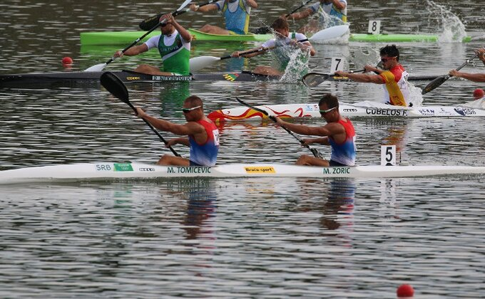

Kajak je sport na vodi koji se prvi put pojavio 1924. na Olimpijskim igrama u Parizu. Sve do Olimpijskih igara u Berlinu 1936. kajak je bio samo promocija. Prvobitne discipline koje su se veslale bile su na rastojanju od 10000m, 5000m i 1000m. Danas tako dugačke distance imaju svoje posebno takmičenje, dok distance na 1000m, 500m i 200m bivaju na istom takmičenju. Nekada su se kajaci i vesla pravili od drveta, dok se danas proizvode od karbona i iz godine u godinu dolaze sve bolji i napredniji kajaci.
| Discipline | |
| Olimpijske | Neolimpijske |